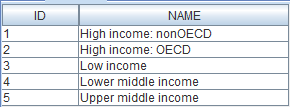

The wb05 project
General info
Project description
Data source
The About view
The Life expectancy at birth view
Changes relative to the wb04 project
Database
General info
This project provides charts of the life expectancy at birth by country. The countries can be grouped by region and income and the user can select a country from this group by using a combobox, as seen below:

It is also possible to manually iterate through the countries by using the arrow buttons or let the program iterate automatically by pressing the  button.
SQL wildcards such as % can be used in the text fields prmRegion and prmIncome.
button.
SQL wildcards such as % can be used in the text fields prmRegion and prmIncome.
Project description
Data source
The project declares an SQL data source consisting of an embedded Derby database stored in a zip file located in the project's directory.
Because Viewreka sets the value of the system property 'user.dir' to the directory of the current project, this property is used in the connection string to locate the database.
The About View
The About view provides an HTML chart with information about this project. The chart content is retrieved from an external file (and it is the document you are currently reading).
The Life expectancy at birth View
The Life expectancy at birth view provides an XY chart based on the dataset dsLifeExp, which is defined by a parameterized query.
Changes relative to the wb04 project:
- The query of the dsCountry dataset has been parameterized and is now stored in an external file.
- Two new string parameters have been introduced: prmRegion and prmIncome. They are used in the query of the dsCountry dataset.
Database
This project uses a Derby database compiled from data provided by the World Bank.
The database consists of four tables, as seen in the figure below:
 Below is a sample of the data contained in these tables:
Below is a sample of the data contained in these tables:
TA_COUNTRY

|
TA_REGION

|
TA_INCOME

|
TA_INDICATOR

|
The database also contains two views that present the data in a user friendly form, as illustrated by the samples below:
V_COUNTRY
 V_INDICATOR
V_INDICATOR